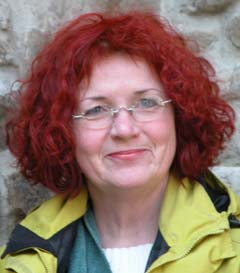

Ihre Heilpraktikerin
Cita Lindemann - Heilpraktikerin/MTA
| 1967-1971 | Arzthelferin (Praxis für Urologie). |
| 1972 | MTA-Prüfung Uniklinik Köln. |
| 1973 | Fachabitur für das Studium an der Pädagogischen Hochschule. |
| 1973 - 1975 | Studium an der Päd. Hochschule in Köln. |
| 1975 | Diplom-Vorprüfung in Pädagogik. |
| 1976 - 1983 | Mutter und Hausfrau (3 Kinder). |
| 1984 - 1987 | Ausbildung und Prüfung zur Heilpraktikerin. |
| 1987 | Praktika in unterschiedlichen Praxen. |
| 1988 | Selbstständigkeit in der eigenen "Praxis für Naturheilverfahren", bis zum heutigen Tag. |